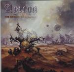

| Artist: | Ayreon |
| Title: | The Dream Sequencer |
| Label: | Transmission TM-019 |
| Length(s): | 70 minutes |
| Year(s) of release: | 2000 |
| Month of review: | 07/2000 |
| 1) | The Dream Sequencer | 5.08 |
| 2) | My House On Mars | 7.49 |
| 3) | 2084 | 7.42 |
| 4) | One Small Step | 8.46 |
| 5) | The Shooting Company Of Captain Frans B. Cocq | 7.57 |
| 6) | Dragon On The Sea | 7.09 |
| 7) | Temple Of The Cat | 4.11 |
| 8) | Carried By The Wind | 3.59 |
| 9) | And The Druids Turn To Stone | 6.36 |
| 10) | The First Man On Earth | 7.19 |
| 11) | The Dream Sequencer Reprise | 3.36 |
The album: The album opens with an introduction to the story. We are on Mars in what seem to be the final days of mankind. We return to the past by means of the dream sequencer. This first instrumental track has quite a lot of echoes of Pink Floyd, mainly in the guitar work (think Shine On ... here), but the keyboards give the track a slightly more modern sound. The next one, My House On Mars opens depressingly with the vocals of Edlund, but in the chorus the classical vocals of Floor Jansen are also present. The focus in this track is on keyboards, that give the song a very modern, somewhat cyberpunkish industrial feel. Do not expect heavy stuff though because this album is the ballad side of the band. This does not mean that everything is low and down, because the middle part features some thriumphant and orchestral passages. Great ones, I even admit to getting tears in my eyesslightly before the bridge. However a feeling of desolation and despair stays throughout. Then we go into the war itself as predicted by Ayreon on the first album. The Earth dies. This is a rather peaceful track, as peaceful as the Earth itself is now. Again, Floyd influences are evident in the melodic guitar playing. Lana Lane is the singer on this track and she also does the backing vocals. Nicely melodic throughout, the song becomes quite a bit more powerful and fuller I wonder whether it is a coincidence that 2084 is a century after 1984. It seems 84 has some significant meaning here. In the opening to One Small Step the Floyd influences are again evident, that is until we get the more optimistic sounding parts. These optimistic parts are quite prominent and again there is something triumphant about the music (listen to the guitar solo with backing choir). When I hadn't seen the lyrics of The Shooting Company Of Captain Frans B. Cocq I was wondering what the hell it would be about. But you'll know when you've seen the booklet; I won't reveal it here. Someone called Mouse is singing this one. The song opens a bit bouncily, but the intermezzo is quite stately. Again a good track with as always memorable melodies and a good atmosphere. The music get positively anthemic toward the end with the wailing backing vocals of Lana Lane. The vocals of Mouse are slightly warped reminding me a bit of the Beatles there. Lana Lane is the only singer to have two lead vocal parts, and the second is this one, Dragon On The Sea. A bit mellow in the chorus this one, but the vocal presentation and the twist in the final line, make it all okay. Temple Of The Cat is sung by Jacqueline Govaert of the band Krezip. She gives a good performance here (especially the arrangement of harmonies) in this track where some Beatles influences can be spotted because of cello. The flute adds to the peaceful atmosphere of this track. Very to the point. Arjen allowed himself some vocal lines as well here on Carried By The Wind, which opens a bit in sort of orchestral Kansas style. It is totally evident from the lyrics why Arjen sings this part, because in our travel backwards in time we have now arrived at the lifetime of the blind troubadour Ayreon. The guitar figures quite prominently in this track, but the pace doesn't go too high. After a first listen my favourite tracks were the following two. The first is the soberly opening And The Druids Turn To Stone sung by Damian Wilson. His dramatic versatile voice is wonderfully suited for this laden track. The keyboards dominate this melodramatic piece of work, but do not underestimate the sadly wailing guitar. It is fitting that a song about Stonehenge should be sung by a Englishman. The next one is sung by Neal Morse. I know Arjen is a fan of Spocks Beard seeing him regularly at their concerts. A love for the Beatles is shared by Morse and Lucassen and this comes out in this track. The vocals of Morse also give a link to Spocks Beard. The optimistic chorus is extremely memorable and the bridge also fits very well. A great composition. The album closes with a reprise of the opener, a sad conclusion to a magnificent album.
The artwork is great and extensive.